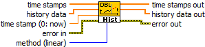

Owning Palette: History Report & Utility VIs
The VI inserts the specified timestamp and either interpolated or extrapolated value at this timestamp into an appropriate position in DBL history. Interpolation method can be linear (by default), spline, polynominal or rational.
 |
Click the parameters for more information |